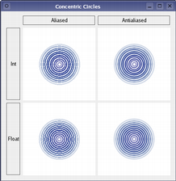
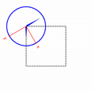
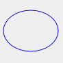
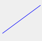
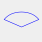
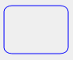

| Home · All Classes · Modules · QSS HELP · QSS 案例 · VER007 HOME |
QPainter类的控件和其他绘图设备进行低级别的油画。More...
通过继承QStylePainter。
QPainter类的控件和其他绘图设备进行低级别的油画。
QPainter提供了高度优化的函数来完成大部分的绘图GUI程序的要求。由此可以得出一切从简单的线条到复杂的形状像馅饼和和弦。它也可以绘制对齐的文本和像素图。通常情况下，它绘制一个“自然”的坐标系中，但它也可以做视图和世界的改造。 QPainter可以在继承的任何对象操作QPaintDevice类。
共同使用的QPainter的是里面的一个小部件的绘制事件：构建和自定义（如设置笔或刷子）的画家。再画。记住拉丝后销毁QPainter的对象。例如：
void SimpleExampleWidget.paintEvent(QPaintEvent *) { QPainter painter(this); painter.setPen(Qt.blue); painter.setFont(QFont("Arial", 30)); painter.drawText(rect(), Qt.AlignCenter, "Qt"); }
QPainter的核心功能是绘图，但是这个类还提供了几个函数，允许您自定义的QPainter的设置和它的渲染质量，和其他人，使削波。此外，您可以控制不同的形状如何通过指定画家的组成模式合并在一起。
该isActive（）函数表示的画家是否处于活动状态。画家被激活begin（ ）函数，而这需要一个构造函数QPaintDevice的说法。该end（ ）函数，析构函数，停用它。
连同QPaintDevice和QPaintEngine类， QPainter的形成的基础， Qt的涂料体系。 QPainter的是用于执行绘图操作的类。QPaintDevice表示可以涂在使用QPainter的一个装置。QPaintEngine规定，画家用来绘制到不同类型的设备的接口。如果画家是活动的，device（ ）返回绘制设备上的画家描绘，和paintEngine（ ）返回的绘图引擎，该画家目前在运行。欲了解更多信息，请参阅Paint System。
有时候我们需要让别人漆上不同寻常的QPaintDevice。 QPainter的支持静态函数来做到这一点，setRedirected（ ） 。
Warning:当paintdevice是一个小部件， QPainter的只能内的paintEvent （）函数或在一个称为的paintEvent （功能）中使用，也就是说，除非Qt.WA_PaintOutsidePaintEvent插件属性设置。在Mac OS X和Windows ，你只能在一个的paintEvent （ ）函数漆不管这个属性的设置。
有几个设置，您可以自定义，以使根据您的喜好了QPainter绘制：
需要注意的是其中的一些设置反映在一些油漆设备的设置，比如QWidget.font（ ） 。该QPainter.begin（ ）函数（或等价的QPainter的构造函数）从绘制设备拷贝这些属性。
您可以在任何时候保存了QPainter的状态通过调用save（ ）函数，它节省了内部堆栈中的所有可用的设置。该restore（ ）函数弹出他们回来。
QPainter提供了许多功能来绘制最原语：drawPoint（ ）drawPoints（ ）drawLine（ ）drawRect（ ）drawRoundedRect（ ）drawEllipse（ ）drawArc（ ）drawPie（ ）drawChord（ ）drawPolyline（ ）drawPolygon（ ）drawConvexPolygon（）和drawCubicBezier（ ） 。这两个便利的功能，drawRects（）和drawLines（ ） ，绘制矩形或线条的给定数组中的给定数量QRects or QLines使用当前画笔和画刷。
QPainter类还提供了fillRect（）函数，其填埋所述给定QRect用给定的QBrush和eraseRect（ ）函数，删除给定矩形内的区域。
所有这些功能都同时具有整数和浮点版本。
 |
Basic Drawing Example
该Basic Drawing示例显示了如何使用QPainter类在各种不同的风格显示基本的图形元素。 |
如果您需要绘制一个形状复杂，特别是如果你需要重复这样做，考虑创建一个QPainterPath并用它绘制drawPath（ ） 。
|
Painter Paths example
该QPainterPath类提供一个容器，用于绘制操作，从而能够构造和重用的图形形状。 该Painter Paths例子显示了画家的路径如何可以用来构建复杂的形状进行渲染。 |
 |
的QPainter还提供了fillPath（）函数，其填埋所述给定QPainterPath用给定的QBrush和strokePath（ ）函数绘制给定路径的轮廓（即描边路径） 。
另见Vector Deformation演示展示了如何利用先进的矢量技术，用来绘制文本QPainterPath时，Gradients演示显示了不同类型的梯度是在Qt中可用的，并且Path Stroking演示这显示了Qt内建的虚线样式，并显示自定义模式可以如何用来扩展现有模式的范围。
| Vector Deformation | Gradients | Path Stroking |
|---|---|---|
 |
 |
 |
有功能绘制像素图/图像，即drawPixmap（ ）drawImage（）和drawTiledPixmap（ ） 。两drawPixmap（）和drawImage（）产生相同的结果，不同之处在于drawPixmap（ ）更快的屏幕，而drawImage（ ）可能会更快的QPrinter或其他装置。
使用文本绘制完成时drawText（ ） 。当你需要细粒度的定位，boundingRect（ ）告诉你在哪里给定的drawText（ ）命令将绘制。
有一个drawPicture（）函数绘制的整个内容QPicture。该drawPicture（ ）函数是忽略所有画家的设置作为唯一功能QPicture有它自己的设置。
要获得使用QPainter的最佳渲染效果，你应该使用平台无关QImage油漆设备;即使用QImage将确保结果具有在任何平台上相同的像素表示。
QPainter类还提供了通过控制渲染质量的一种手段其RenderHint枚举和浮点精度支持：绘制原语所有的功能都有一个浮点版本。这些通常以与组合使用QPainter.Antialiasing呈现提示。
|  |
Concentric Circles Example
该Concentric Circles实例表明，可以绘制自定义部件在使用浮点精度和抗混叠得到改善渲染质量。 应用程序的主窗口中显示其正在使用的精度和抗混叠的各种组合，得出了几个小部件。 |
该RenderHint枚举指定标志来QPainter的，可能会或可能不会被任何给定的发动机尊重。QPainter.Antialiasing表明发动机应该反锯齿原语的边缘，如果可能的话，QPainter.TextAntialiasing表明发动机应尽可能消除文字锯齿，而QPainter.SmoothPixmapTransform表明发动机应该使用一个平滑的pixmap变换算法。HighQualityAntialiasing是一个OpenGL的具体呈现提示，指示引擎应使用片断程序和离屏渲染的抗锯齿。
该renderHints（ ）函数返回一个标志，指定在这个画家将呈现提示。使用setRenderHint（ ）函数来设置或清除当前设置的RenderHints。
通常情况下， QPainter的操作设备自己的坐标系统（通常是像素） ，但QPainter的具有坐标变换良好的支持。
| nop | rotate() | scale() | translate() |
|---|---|---|---|
 |
 |  |
最常用的变换是缩放，旋转，平移和剪切。使用scale（）函数以一个给定的偏移量来缩放坐标系中，rotate（ ）函数则顺时针旋转和translate（）把它翻译出来（即增加一个给定的偏移量点） 。也可以使用捻坐标系原点周围的shear（）函数。请参阅Affine Transformations演示了剪切坐标系统的可视化。
另见Transformations例如，显示转变如何影响了QPainter的渲染图元的方式。尤其是，它显示了如何变换的顺序会影响结果。
|
Affine Transformations Demo
该Affine Transformations演示显示了Qt的能力画上执行的操作仿射变换。该演示还允许用户尝试使用转换操作，并立即看到结果。 |
所有穿越 - 操作上进行改造工作worldTransform（ ） 。矩阵转换成在平面上的点到另一点。如需变换矩阵的更多信息，请参见Coordinate System和QTransform文档。
该setWorldTransform（ ）函数可以更换或添加到当前设置的worldTransform（ ） 。该resetTransform（ ）函数重置的是用做任何转换translate（ ）scale（ ）shear（ ）rotate（ ）setWorldTransform（ ）setViewport（）和setWindow（）函数。该deviceTransform（ ）返回一个转换从逻辑坐标到平台相关的绘图设备的设备坐标的矩阵。后者的功能是对平台相关的手柄使用平台的绘画命令时，才需要，而平台没有做转换nativly 。
当使用QPainter的绘图，我们使用它，然后被转换成漆设备的物理坐标逻辑坐标指定点。逻辑坐标物理坐标的映射由QPainter的的处理combinedTransform（ ）的组合viewport（）和window（）和worldTransform（ ） 。该viewport（）表示物理坐标指定一个任意的矩形，则window（ ）描述在逻辑坐标相同的矩形，并且worldTransform（）是相同的变换矩阵。
QPainter的可夹任何拉伸操作到一个矩形，区域，或一个矢量路径。使用功能的当前片段可clipRegion（）和clipPath（ ） 。无论路径或地区是首选（快）取决于相关paintEngine（ ） 。例如，本QImage绘图引擎更喜欢的路径，而X11的绘图引擎更喜欢的区域。设置一个剪辑的画家逻辑坐标进行。
经过了QPainter的裁剪，绘制设备也可能被裁剪。例如，大多数的部件夹了使用的子控件的像素，并且大多数打印机夹了接近纸张的边缘区域。这种额外的裁剪不受的返回值反映clipRegion（）或hasClipping（ ） 。
QPainter提供了该CompositionMode枚举它定义了数字图像合成波特 - 达芙的规则，它描述了一个模型，结合在一个图像，源像素，在另一个图像中，目标像素。
的组合物中的两种最常见的形式是Source和SourceOver。Source用于绘制不透明的物体上绘制设备。在这种模式下，在源代码中的每个像素将替换目的地中的相应像素。在SourceOver组合模式，源对象是透明的，被描绘在目标之上。
请注意，组成转变经营pixelwise 。出于这个原因，有使用图形原语本身和它的边界矩形之间的差：该边界矩形中包含与α == 0 （即周围的原始像素）的像素。这些像素将复盖其他图像的像素，情感上清除那些，而原始的只有复盖其自身的区域。
 |
Composition Modes Demo
该Composition Modes演示中，在Qt的demo目录可用，让你体验不同的组合方式，并立即看到结果。 |
如果您使用的坐标与Qt的基于光栅的绘图引擎，一定要注意这一点很重要，而坐标大于+ / - 215可以使用，超出该范围的坐标进行任何绘画不保证显示;绘图可能会被裁剪。这是由于使用的short int在执行。
通过Qt的抚摩产生的轮廓是只是一个近似值与时曲线形状处理。它是在不可能代表使用另一个贝塞尔曲线段Bezier曲线段的轮廓大多数情况下，与这样的Qt近似曲线概述通过使用几个较小的曲线。出于性能的考虑是有限制的Qt多少曲线使用这些轮廓，从而使用大画笔的宽度时，或缩放的轮廓误差增大。以产生轮廓线具有较小的误差，可以使用QPainterPathStroker类，它有它，让我们的用户指定的误差容限的setCurveThreshold成员函数。另一种解决方法是将路径多边形先转换，然后绘制多边形来代替。
QPainter的是一个丰富的框架，它允许开发者做一个伟大的各种图形操作，如渐变，组成方式和矢量图形。和QPainter的可以在各种不同的硬件和软件堆栈做到这一点。当然硬件和软件的基本组合有一定的影响性能，并确保每一个运算速度快结合的组成模式，画笔，裁剪，转换等所有各种组合，是因为接近一个不可能完成的任务排列的号码。作为一种妥协，我们选择了QPainter的API和后端，在性能保证是一样好，我们可以合理地得到它的硬件和软件的结合给定的一个子集。
我们专注于为高性能引擎的后端是：
这些操作是：
此列表提供了一个迹象，其中的功能在一个应用程序的性能是至关重要的安全使用。对于某些设置，其他操作可能会快过，但使它们的广泛使用之前，建议进行基准测试和验证他们的系统，该软件将在年底运行。此外，有昂贵的操作是确定使用的情况下，例如当结果被缓存在一个QPixmap。
定义了支持数字图像合成的模式。组合模式用于指定如何在一个图像中的像素，源，在另一图像中，目的地合并像素。
请注意，按位光栅操作模式，表示一个RasterOp的前缀，仅本地支持的X11和光栅涂料引擎。这意味着，利用Mac上这些模式的唯一途径是通过一个QImage。文件中的RasterOp表示混合模式not支持笔和画笔与alpha分量。另外，在接通QPainter.Antialiasing渲染暗示将有效地禁用RasterOp的模式。


最常见的类型是SourceOver （通常被称为只是α混合），其中源像素被混合在目标像素的顶部在这样一种方式，光源的阿尔法分量定义像素的透明度。
当涂料设备是QImage中，图像的格式必须被设置为Format_ARGB32Premultiplied or Format_ARGB32对于该组合物的模式有任何效果。对于业绩的预乘的版本是首选格式。
当一个组成模式设置适用于所有运营商的绘画，钢笔，画笔，渐变和像素图/影像图。
| Constant | Value | Description |
|---|---|---|
| QPainter.CompositionMode_SourceOver | 0 | 这是默认模式。源的alpha被用于混合的像素上的目标的上方。 |
| QPainter.CompositionMode_DestinationOver | 1 | 目的地的阿尔法用于混在一起的源像素的上方。这个模式是CompositionMode_SourceOver的倒数。 |
| QPainter.CompositionMode_Clear | 2 | 在目标的像素被清除（设置为完全透明）来源无关。 |
| QPainter.CompositionMode_Source | 3 | 输出是源像素。 （这意味着一个基本的复印操作，并是相同的SourceOver当源像素是不透明的） 。 |
| QPainter.CompositionMode_Destination | 4 | 的输出是目标像素。这意味着它们的混合没有任何效果。这个模式是CompositionMode_Source的倒数。 |
| QPainter.CompositionMode_SourceIn | 5 | 的输出是源，其中所述的α是减少了该目的的。 |
| QPainter.CompositionMode_DestinationIn | 6 | 输出目的地，其中所述α是减少了源的。这个模式是CompositionMode_SourceIn的倒数。 |
| QPainter.CompositionMode_SourceOut | 7 | 的输出是源，其中所述的α是减少了目的地的倒数。 |
| QPainter.CompositionMode_DestinationOut | 8 | 输出目的地，其中所述α是减少了源的倒数。这个模式是CompositionMode_SourceOut的倒数。 |
| QPainter.CompositionMode_SourceAtop | 9 | 源像素混合在目标的顶部，与源像素减少了目标像素的alpha的alpha 。 |
| QPainter.CompositionMode_DestinationAtop | 10 | 目标像素混合的信号源的顶部，与目标像素的alpha是减少了目标像素的alpha 。这个模式是CompositionMode_SourceAtop的倒数。 |
| QPainter.CompositionMode_Xor | 11 | 源，其阿尔法减少与目标的α的倒数，被合并与目的地，其阿尔法减小由源的α的倒数。 CompositionMode_Xor是不一样的按位异或运算。 |
| QPainter.CompositionMode_Plus | 12 | 无论是α和在源和目标像素的颜色被加在一起。 |
| QPainter.CompositionMode_Multiply | 13 | 的输出是源颜色乘以目的地。乘用白色的叶子的颜色不变的颜色，而与黑色的颜色相乘，产生黑色。 |
| QPainter.CompositionMode_Screen | 14 | 源和目标色彩反相，然后相乘。筛选与白色的颜色会产生白色的，而筛选的颜色与黑色的颜色保持不变。 |
| QPainter.CompositionMode_Overlay | 15 | 乘法或屏幕上的颜色取决于目标颜色。目标颜色与光源颜色的混合，以反映目标的亮度或暗度。 |
| QPainter.CompositionMode_Darken | 16 | 的源颜色和目标颜色较暗被选中。 |
| QPainter.CompositionMode_Lighten | 17 | 的源和目的色彩的打火机被选中。 |
| QPainter.CompositionMode_ColorDodge | 18 | 目标颜色变亮以反映源颜色。黑色源色彩会使目标色不变。 |
| QPainter.CompositionMode_ColorBurn | 19 | 目标颜色变暗以反映源颜色。白源色彩会使目标色不变。 |
| QPainter.CompositionMode_HardLight | 20 | 乘法或屏幕上的颜色取决于源颜色。光源的颜色会变浅目标颜色，而深源颜色会变暗目标颜色。 |
| QPainter.CompositionMode_SoftLight | 21 | 变暗或变亮的颜色取决于源颜色。类似CompositionMode_HardLight 。 |
| QPainter.CompositionMode_Difference | 22 | 减去的颜色从较轻的更暗。用白色喷漆反转目标颜色，而画有黑色会使目标色不变。 |
| QPainter.CompositionMode_Exclusion | 23 | 类似CompositionMode_Difference ，但具有较低的对比度。用白色喷漆反转目标颜色，而画有黑色会使目标色不变。 |
| QPainter.RasterOp_SourceOrDestination | 24 | 是否在源和目标像素（ SRC或DST ）的按位OR运算。 |
| QPainter.RasterOp_SourceAndDestination | 25 | 是否在源和目标像素（ SRC与DST ）的按位与运算。 |
| QPainter.RasterOp_SourceXorDestination | 26 | 是否在源和目标像素（ SRC XOR DST）的按位异或运算。 |
| QPainter.RasterOp_NotSourceAndNotDestination | 27 | 是否在源和目标像素的按位NOR运算（ （不SRC ）和（不是DST ） ） 。 |
| QPainter.RasterOp_NotSourceOrNotDestination | 28 | 是否在源和目标像素（ （不SRC ）或（不是DST ） ）按位与非操作。 |
| QPainter.RasterOp_NotSourceXorDestination | 29 | 是否在源像素被反转，然后相异或目的地（ （不SRC ） XOR dst）的按位运算。 |
| QPainter.RasterOp_NotSource | 30 | 是否在源像素反转（不是SRC）按位运算。 |
| QPainter.RasterOp_NotSourceAndDestination | 31 | 请问其中源是倒，然后相与与目标（ （不SRC ）和DST ）按位运算。 |
| QPainter.RasterOp_SourceAndNotDestination | 32 | 请问那里的源逻辑与运算倒目的地像素（ src和（不是DST ） ）按位运算。 |
See also compositionMode（ ）setCompositionMode（ ）Composition Modes和Image Composition Example。
| Constant | Value | Description |
|---|---|---|
| QPainter.OpaqueHint | 0x01 | 表示该像素映像的片段要被绘制为不透明。不透明的碎片可能更快得出。 |
这个枚举被引入或修改的Qt 4.7 。
该PixmapFragmentHints类型是一个typedef为QFlags\u003cPixmapFragmentHint\u003e 。它存储PixmapFragmentHint值的或组合。
See also QPainter.drawPixmapFragments（）和QPainter.PixmapFragment。
Renderhints用于指定标志来QPainter可能会或可能不会被任何给定的发动机尊重。
| Constant | Value | Description |
|---|---|---|
| QPainter.Antialiasing | 0x01 | 表明发动机应该反锯齿原语的边缘，如果可能的。 |
| QPainter.TextAntialiasing | 0x02 | 表明发动机应尽可能消除文字锯齿。强制禁用抗锯齿文本，不要使用此提示。相反，设置QFont.NoAntialias你的字体的风格策略。 |
| QPainter.SmoothPixmapTransform | 0x04 | 表明发动机应该使用一个平滑的pixmap变换算法（例如，双线性）而不是最近的邻居。 |
| QPainter.HighQualityAntialiasing | 0x08 | 一个OpenGL的具体呈现提示，指示引擎应使用片断程序和离屏渲染的抗锯齿。 |
| QPainter.NonCosmeticDefaultPen | 0x10 | 发动机应该解释钢笔的宽度为0 （否则使QPen.isCosmetic（ ） ）作为一种非化妆笔为1的宽度。 |
该RenderHints类型是一个typedef为QFlags\u003cRenderHint\u003e 。它存储RenderHint值的或组合。
See also renderHints（ ）setRenderHint（ ）Rendering Quality和Concentric Circles Example。
构造一个画家。
构造一个画家的画开始油漆device马上。
此构造方便短命的画家，如：在QWidget.paintEvent（ ），并应只能使用一次。该构造函数调用begin（ ）为您和QPainter析构函数会自动调用end（ ） 。
void MyWidget.paintEvent(QPaintEvent *) { QPainter p; p.begin(this); p.drawLine(...); // drawing code p.end(); }
使用此构造相同的例子：
void MyWidget.paintEvent(QPaintEvent *) { QPainter p(this); p.drawLine(...); // drawing code }
由于构造函数不能提供反馈时，画家的初始化失败，你应该宁可使用begin（）和end（ ）画上的外部设备，例如打印机。
返回当前背景刷。
See also setBackground（）和Settings。
返回当前背景模式。
See also setBackgroundMode（）和Settings。
开始画漆device如果成功返回True，否则返回False 。
请注意，所有画家的设置（setPen（ ）setBrush（ ）等）被重置为默认时开始值（ ）被调用。
可能发生的错误是严重的问题，如这些：
painter->begin(0); // impossible - paint device cannot be 0 QPixmap image(0, 0); painter->begin(&image); // impossible - image.isNull() == true; painter->begin(myWidget); painter2->begin(myWidget); // impossible - only one painter at a time
请注意，大多数的时候，你可以使用一个构造函数，而不是开始（ ） ，而end（ ）会自动在毁灭完成。
Warning:一种涂料设备只能由一个画家在同一时间内绘。
Warning:画上一个QImage与格式QImage.Format_Indexed8不被支持。
刷新绘画管道，并准备直接与基础图形上下文发出命令的用户。必须后跟调用endNativePainting（ ） 。
请注意，只有国家的基本绘图引擎的变化将被重置为各自的默认状态。我们重置状态可能会改变从发布到解除。以下状态重置目前在OpenGL的2引擎：
如果，例如OpenGL的多边形模式是由内部的beginNativePaint用户改变（）/endNativePainting（）块，它不会被重置为默认状态endNativePainting（ ） 。下面是一个例子，显示了画家的命令和原OpenGL命令的混杂：
QPainter painter(this); painter.fillRect(0, 0, 128, 128, Qt.green); painter.beginNativePainting(); glEnable(GL_SCISSOR_TEST); glScissor(0, 0, 64, 64); glClearColor(1, 0, 0, 1); glClear(GL_COLOR_BUFFER_BIT); glDisable(GL_SCISSOR_TEST); painter.endNativePainting();
此功能被引入Qt的4.6 。
See also endNativePainting（ ） 。
返回的矩形边界text因为当内给定的绘制它会出现rectangle用指定的flags使用当前设置的font（）;即该函数告诉你在哪里drawText（ ）函数将以此给予相同的参数时。
如果text在给定的不适合rectangle使用指定的flags，该函数返回所需要的矩形。
该flags参数是下列标志的按位或：
如果多个水平或几个的垂直对齐的标志被设置，所产生的取向是不确定的。
See also drawText（ ）Qt.Alignment和Qt.TextFlag。
这是一个重载函数。
返回的矩形边界text因为当内给定的绘制它会出现rectangle用指定的flags使用当前设置的font（ ） 。
返回画家的当前画笔。
See also QPainter.setBrush（）和Settings。
返回当前设置的画刷原点。
See also setBrushOrigin（）和Settings。
返回如果有一个夹子当前剪辑的边框，否则返回一个空的矩形。注意裁剪区域是由于在逻辑坐标。
矩形边界是不能保证是紧张。
此功能被引入Qt的4.8 。
See also setClipRect（ ）setClipPath（）和setClipRegion（ ） 。
返回当前剪辑的路径。请注意，剪辑路径，给出了逻辑坐标。
Warning: QPainter没有明确地存储该组合的片段，因为这是由底层处理QPaintEngine的，所以路径被重新按要求并转化到当前的逻辑坐标系统。这是一个潜在的昂贵的操作。
See also setClipPath（ ）clipRegion（）和setClipping（ ） 。
返回当前设置的裁剪区域。注意裁剪区域是由于在逻辑坐标。
Warning: QPainter没有明确地存储该组合的片段，因为这是由底层处理QPaintEngine的，所以路径被重新按要求并转化到当前的逻辑坐标系统。这是一个潜在的昂贵的操作。
See also setClipRegion（ ）clipPath（）和setClipping（ ） 。
将转换矩阵结合当前窗口/视口和世界的改造。
See also setWorldTransform（ ）setWindow（）和setViewport（ ） 。
返回当前的组成模式。
See also CompositionMode和setCompositionMode（ ） 。
返回漆设备上这个画家正在画画，或者0，如果画家不活跃。
See also isActive（ ） 。
返回从转换逻辑坐标到平台相关的绘图设备的设备坐标的矩阵。
这个功能是only在平台相关的句柄（使用平台的绘画命令时需要Qt.HANDLE），以及平台不nativly做转换。
该QPaintEngine.PaintEngineFeature枚举可以被查询，以确定是否该平台进行变换与否。
See also worldTransform（）和QPaintEngine.hasFeature（ ） 。
绘制由给定的定义的弧rectangle，startAngle和spanAngle。
该startAngle和spanAngle必须以一定程度的十六分之一来指定，即一个完整的圆等于5760 （ 16 * 360 ） 。用于角度的正值逆时针意思而负值意味着顺时针方向。零度是在3点钟的位置。
 |
QRectF rectangle(10.0, 20.0, 80.0, 60.0); int startAngle = 30 * 16; int spanAngle = 120 * 16; QPainter painter(this); painter.drawArc(rectangle, startAngle, spanAngle); |
See also drawPie（ ）drawChord（）和Coordinate System。
这是一个重载函数。
绘制由给定的定义的弧rectangle，startAngle和spanAngle。
这是一个重载函数。
绘制由矩形起点在（定义弧x，y）用指定的width和height和给定的startAngle和spanAngle。
绘制和弦由给定的定义rectangle，startAngle和spanAngle。和弦填充有电流brush（ ） 。
该startAngle和spanAngle必须以一定程度的十六分之一来指定，即一个完整的圆等于5760 （ 16 * 360 ） 。用于角度的正值逆时针意思而负值意味着顺时针方向。零度是在3点钟的位置。
 |
QRectF rectangle(10.0, 20.0, 80.0, 60.0); int startAngle = 30 * 16; int spanAngle = 120 * 16; QPainter painter(this); painter.drawChord(rect, startAngle, spanAngle); |
See also drawArc（ ）drawPie（）和Coordinate System。
这是一个重载函数。
绘制和弦由给定的定义rectangle，startAngle和spanAngle。
这是一个重载函数。
绘制由矩形开始在定义的弦（x，y）用指定的width和height和给定的startAngle和spanAngle。
绘制由第一定义的凸多边形pointCount阵列中的点points使用当前画笔。
static const QPointF points[4] = { QPointF(10.0, 80.0), QPointF(20.0, 10.0), QPointF(80.0, 30.0), QPointF(90.0, 70.0) }; QPainter painter(this); painter.drawConvexPolygon(points, 4); |
第一点是隐式连接到最后一个点，该多边形被填充有电流brush（ ） 。如果所提供的多边形不是凸的，也就是说，它至少包含一个角度大于180度大，其结果是不确定的。
在某些平台上（例如， X11 ）时， drawConvexPolygon （）函数可以比快drawPolygon（）函数。
See also drawPolygon（ ）drawPolyline（）和Coordinate System。
这是一个重载函数。
绘制由第一定义的凸多边形pointCount阵列中的点points使用当前画笔。
这是一个重载函数。
绘制由定义的凸多边形polygon使用当前画笔和画刷。
这是一个重载函数。
绘制由定义的凸多边形polygon使用当前画笔和画刷。
绘制由指定所定义的椭圆rectangle。
一个实心椭圆的大小为rectangle。size()。一个描边椭圆的大小为rectangle。size()加上画笔的宽度。
|  |
QRectF rectangle(10.0, 20.0, 80.0, 60.0); QPainter painter(this); painter.drawEllipse(rectangle); |
See also drawPie（）和Coordinate System。
这是一个重载函数。
绘制由指定所定义的椭圆rectangle。
这是一个重载函数。
绘制由矩形开始在所定义的椭圆（x，y）用给定的width和height。
这是一个重载函数。
绘制定位在椭圆center与半径rx和ry。
此功能被引入Qt的4.4 。
这是一个重载函数。
绘制定位在椭圆center与半径rx和ry。
此功能被引入Qt的4.4 。
绘制指定glyphs在给定的position。该position给出了基线的字形串的边缘。字形将从所选择的字体检索glyphs以及在由位置给定偏移glyphs。
此功能被引入Qt的4.8 。
See also QGlyphRun.setRawFont（ ）QGlyphRun.setPositions（）和QGlyphRun.setGlyphIndexes（ ） 。
绘制矩形部分source的给定image进入target矩形的绘图设备。
Note:图像缩放以适合该矩形，如果两个图像和矩形大小不同意。
如果图像需要进行修改，以适应在较低分辨率的结果（例如，从32位转换为8位），使用flags指定你将如何喜欢这样的事情发生。
QRectF target(10.0, 20.0, 80.0, 60.0); QRectF source(0.0, 0.0, 70.0, 40.0); QImage image(":/images/myImage.png"); QPainter painter(this); painter.drawImage(target, image, source); |
See also drawPixmap（ ） 。
这是一个重载函数。
绘制矩形部分source的给定image进入target矩形的绘图设备。
Note:图像缩放以适合该矩形，如果两个图像和矩形大小不同意。
这是一个重载函数。
绘制给定的image在给定的point。
这是一个重载函数。
绘制给定的image在给定的point。
这是一个重载函数。
绘制矩形部分source的给定image其原点在给定的point。
这是一个重载函数。
绘制矩形部分source的给定image其原点在给定的point。
这是一个重载函数。
绘制给定的image在给定的rectangle。
Note:图像缩放以适合该矩形，如果两个图像和矩形大小不同意。
这是一个重载函数。
绘制给定的image在给定的rectangle。
Note:图像缩放以适合该矩形，如果两个图像和矩形大小不同意。
这是一个重载函数。
绘制图像时（x，y）通过复制的一部分image入漆设备。
（x，y）指定在绘制设备将要被绘制到左上点。 （sx，sy）指定左上角点image要被绘制。默认值是（0 ，0）。
（sw，sh）指定将要被绘制的图像的大小。默认的，（0， 0）（和负）指一路图像的右下角。
绘制由定义的直线line。
|  |
QLineF line(10.0, 80.0, 90.0, 20.0); QPainter(this); painter.drawLine(line); |
See also drawLines（ ）drawPolyline（）和Coordinate System。
这是一个重载函数。
绘制由定义的直线line。
这是一个重载函数。
绘制一条线从p1至p2。
这是一个重载函数。
绘制一条线从p1至p2。
这是一个重载函数。
绘制一条线从（x1，y1）至（x2，y2），并设置当前画笔位置为（x2，y2） 。
绘制第一lineCount阵列中的行lines使用当前画笔。
See also drawLine（）和drawPolyline（ ） 。
这是一个重载函数。
绘制第一lineCount阵列中的行lines使用当前画笔。
这是一个重载函数。
绘制第一lineCount阵列中的行pointPairs使用当前画笔。的线被指定为点对这样的项的数目pointPairs必须至少lineCount* 2 。
这是一个重载函数。
绘制第一lineCount阵列中的行pointPairs使用当前画笔。
这是一个重载函数。
绘制一条线为每对点的矢量pointPairs using the current pen. If there is an odd number of points in the array, the last point will be ignored.
这是一个重载函数。
绘制一条线为每对点的矢量pointPairs使用当前画笔。
这是一个重载函数。
绘制集的列表中定义的行lines使用当前画笔和画刷。
这是一个重载函数。
绘制集的列表中定义的行lines使用当前画笔和画刷。
绘制给定的画家path使用当前笔的轮廓和当前画笔填充。
 |
QPainterPath path; path.moveTo(20, 80); path.lineTo(20, 30); path.cubicTo(80, 0, 50, 50, 80, 80); QPainter painter(this); painter.drawPath(path); |
See also the Painter Paths example和the Vector Deformation demo。
重播给定的picture在给定的point。
该QPicture类是一个绘图设备，记录和重放QPainter的命令。的图片序列画家命令IO设备在一个平台无关的格式。可以涂在一个部件或pixmap的一切也可以被存储在一个图像。
这个函数完全一样QPicture.play（ ）调用时使用point=QPoint（0 ，0）。
QPicture picture; QPointF point(10.0, 20.0) picture.load("drawing.pic"); QPainter painter(this); painter.drawPicture(0, 0, picture); |
See also QPicture.play（ ） 。
这是一个重载函数。
重播给定的picture在给定的point。
这是一个重载函数。
绘制给定的picture在点（x，y） 。
绘制由指定所定义的扇形rectangle，startAngle和和spanAngle。
馅饼填充有电流brush（ ） 。
该startAngle和spanAngle必须以一定程度的十六分之一来指定，即一个完整的圆等于5760 （ 16 * 360 ） 。用于角度的正值逆时针意思而负值意味着顺时针方向。零度是在3点钟的位置。
|  |
QRectF rectangle(10.0, 20.0, 80.0, 60.0); int startAngle = 30 * 16; int spanAngle = 120 * 16; QPainter painter(this); painter.drawPie(rectangle, startAngle, spanAngle); |
See also drawEllipse（ ）drawChord（）和Coordinate System。
这是一个重载函数。
绘制由指定所定义的扇形rectangle，startAngle和和spanAngle。
这是一个重载函数。
绘制由矩形开始在定义的馅饼（x，y）用指定的width和height和给定的startAngle和spanAngle。
绘制矩形部分source的给定pixmap在给定的target在油漆设备。
Note:像素图进行缩放以适合该矩形，如果两个像素图和矩形大小不同意。
QRectF target(10.0, 20.0, 80.0, 60.0); QRectF source(0.0, 0.0, 70.0, 40.0); QPixmap pixmap(":myPixmap.png"); QPainter(this); painter.drawPixmap(target, image, source); |
If pixmap是QBitmap它被画成与正在使用的笔的颜色“设置”的位。如果backgroundMode是Qt.OpaqueMode中，“未设置”位所使用的背景画笔的颜色绘制，如果backgroundMode是Qt.TransparentMode中，“未设置”位是透明的。不支持位图绘制具有渐变或纹理的颜色。
See also drawImage（ ） 。
这是一个重载函数。
绘制矩形部分source的给定pixmap在给定的target在油漆设备。
Note:像素图进行缩放以适合该矩形，如果两个像素图和矩形大小不同意。
这是一个重载函数。
绘制矩形部分source的给定pixmap其原点在给定的point。
这是一个重载函数。
绘制矩形部分source的给定pixmap其原点在给定的point。
这是一个重载函数。
绘制给定的pixmap其原点在给定的point。
这是一个重载函数。
绘制给定的pixmap其原点在给定的point。
这是一个重载函数。
绘制给定的pixmap在位置（x，y） 。
这是一个重载函数。
绘制给定的pixmap在给定的rectangle。
Note:像素图进行缩放以适合该矩形，如果两个像素图和矩形大小不同意。
这是一个重载函数。
绘制pixmap成在位置（矩形x，y）用给定的width和height。
这是一个重载函数。
绘制与原点的矩形部分（sx，sy） ，宽度sw和高度sh，的给定pixmap，在点（x，y） ，具有一宽w及的高度h。如果SW或SH都等于零的像素映像的宽度/高度被使用，并且调整由偏移SX / SY ;
这是一个重载函数。
绘制像素图在（x，y）通过复制的特定部分pixmap入漆设备。
（x，y）指定在绘制设备将要被绘制到左上点。 （sx，sy）指定左上角点pixmap要被绘制。默认值是（0 ，0）。
（sw，sh）指定像素要被绘制的大小。默认的，（0， 0）（和负）是指所有的方式向像素图的右下角。
此功能是用来绘制pixmap，或者一个子矩形pixmap，在不同的缩放，旋转和透明度多个位置。fragments是阵列fragmentCount元素指定用于绘制每个像素映射片段的参数。该hints参数可用于传递在绘制提示。
此功能可能比多次调用更快drawPixmap（） ，因为后端可以优化状态的变化。
此功能被引入Qt的4.7 。
See also QPainter.PixmapFragment和QPainter.PixmapFragmentHint。
该sourceRects参数也可能没有。
此功能是用来绘制相同pixmap由指定多个目标和源矩形targetRects。如果sourceRects为0 ，整个像素映像将在每个目标矩形的呈现。该hints参数可用于传递在绘制提示。
此功能可能比多次调用更快drawPixmap（） ，因为后端可以优化状态的变化。
此功能被引入Qt的4.8 。
See also QPainter.PixmapFragmentHint。
绘制一个单点在给定的position使用当前画笔的颜色。
See also Coordinate System。
这是一个重载函数。
绘制一个单点在给定的position使用当前画笔的颜色。
这是一个重载函数。
绘制一个单点位置（x，y） 。
绘制第一pointCount阵列中的点points使用当前画笔的颜色。
See also Coordinate System。
这是一个重载函数。
绘制第一pointCount阵列中的点points使用当前画笔的颜色。
这是一个重载函数。
绘制点的矢量points。
这是一个重载函数。
绘制点的矢量points。
绘制由第一定义的多边形pointCount阵列中的点points使用当前画笔和画刷。
static const QPointF points[4] = { QPointF(10.0, 80.0), QPointF(20.0, 10.0), QPointF(80.0, 30.0), QPointF(90.0, 70.0) }; QPainter painter(this); painter.drawPolygon(points, 4); |
第一点是隐式连接到最后一个点，该多边形被填充有电流brush（ ） 。
If fillRule is Qt.WindingFill中，多边形是用绕组填充算法填充。如果fillRule is Qt.OddEvenFill中，多边形是使用奇偶填充算法填充。看Qt.FillRule对于这些填充规则的更详细的描述。
See also drawConvexPolygon（ ）drawPolyline（）和Coordinate System。
这是一个重载函数。
绘制由第一定义的多边形pointCount阵列中的点points。
绘制由第一定义的折线pointCount在点points使用当前画笔。
请注意，与drawPolygon（ ）函数的最后一点是not连接到第一个，也不是漫天的折线。
static const QPointF points[3] = { QPointF(10.0, 80.0), QPointF(20.0, 10.0), QPointF(80.0, 30.0), }; QPainter painter(this); painter.drawPolyline(points, 3); |
See also drawLines（ ）drawPolygon（）和Coordinate System。
这是一个重载函数。
绘制由第一定义的折线pointCount在点points使用当前画笔。
这是一个重载函数。
绘制由给定的定义的折线points使用当前画笔。
绘制电流rectangle与当前的画笔和画刷。
一个填充矩形的大小为rectangle。大小（ ） 。一个描边矩形的大小为rectangle。大小（ ），再加上画笔的宽度。
 |
QRectF rectangle(10.0, 20.0, 80.0, 60.0); QPainter painter(this); painter.drawRect(rectangle); |
See also drawRects（ ）drawPolygon（）和Coordinate System。
这是一个重载函数。
绘制电流rectangle与当前的画笔和画刷。
这是一个重载函数。
与绘制左上角的矩形在（x，y），并用给定的width和height。
绘制第一rectCount的给定rectangles使用当前画笔和画刷。
See also drawRect（ ） 。
这是一个重载函数。
绘制第一rectCount的给定rectangles使用当前画笔和画刷。
这是一个重载函数。
绘制给定的rectangles使用当前画笔和画刷。
这是一个重载函数。
绘制给定的rectangles使用当前画笔和画刷。
绘制一个矩形rect带有圆角。
该xRadius和yRadius参数指定限定的圆角矩形的角部的椭圆形的半径。何时mode is Qt.RelativeSize，xRadius和yRadius在一半的矩形的宽度和高度的比例分别指定，并应在范围0.0至100.0 。
填充的矩形具有rect.size （的大小） 。一个描边矩形具有rect.size的大小（ ），再加上画笔的宽度。
|  |
QRectF rectangle(10.0, 20.0, 80.0, 60.0); QPainter painter(this); painter.drawRoundedRect(rectangle, 20.0, 15.0); |
此功能被引入Qt的4.4 。
这是一个重载函数。
绘制一个矩形rect带有圆角。
此功能被引入Qt的4.4 。
这是一个重载函数。
绘制一个矩形x，y，w，h带有圆角。
此功能被引入Qt的4.4 。
绘制给定的staticText在给定的topLeftPosition。
该文本将使用的字体和画家的改造集绘制。如果画家设置字体和/或转型是从用来初始化的布局有些出入QStaticText，则布局将不得不被重新计算。使用QStaticText.prepare（）来初始化staticText与字体和转型与它稍后将绘制。
If topLeftPosition是不一样的，当staticText被初始化，或当它被最后绘制，那么就会有翻译文本到新的位置时，会有轻微的开销。
Note:如果画家的转变不仿射，然后staticText将使用普通电话要绘制drawText（ ） ，失去对性能改善的潜力。
Note:y位置被用作字体的顶部。
此功能被引入Qt的4.7 。
See also QStaticText。
这是一个重载函数。
绘制staticText在topLeftPosition。
Note:y位置被用作字体的顶部。
此功能被引入Qt的4.7 。
这是一个重载函数。
绘制staticText在坐标left和top。
Note:y位置被用作字体的顶部。
此功能被引入Qt的4.7 。
绘制给定的text与当前定义的文字方向，开始在给定的position。
此功能不处理换行符（ \ n）的，因为它不能将文本分成多行，并且它不能显示换行符。使用QPainter.drawText （ ）重载采用一个矩形，而是如果要绘制与换行符多行文本，或者如果您希望文本换行。
默认情况下，QPainter绘制文本抗锯齿。
Note:y位置被用作字体的基线。
绘制的瓷砖pixmap，里面的定rectangle其原点在给定的position。
调用drawTiledPixmap （ ）类似于调用drawPixmap（ ）多次填写（瓦）的面积与像素图，而是取决于不同的底层窗口系统上可能效率更高。
See also drawPixmap（ ） 。
这是一个重载函数。
绘制的瓷砖pixmap，里面的定rectangle其原点在给定的position。
这是一个重载函数。
绘制的瓷砖pixmap在指定的矩形。
（x，y）指定在绘制设备将要被绘制到左上顶点;用给定的width和height。 （sx，sy）指定在左上角点pixmap要被绘制的，这默认为（0 ，0）。
完画。而画中使用的任何资源被释放。你通常不需要调用这个，因为它是由所谓的析构函数。
返回True如果画家不再有效，否则返回False 。
See also begin（）和isActive（ ） 。
后手动发布本地绘制命令恢复画家。让画家还原它依赖于调用任何其他画家的命令之前的任何原生状态。
此功能被引入Qt的4.6 。
See also beginNativePainting（ ） 。
擦除内部给定的区域rectangle。相当于调用
fillRect(rectangle, background()).
See also fillRect（ ） 。
这是一个重载函数。
擦除内部给定的区域rectangle。
这是一个重载函数。
擦除矩形开始内部的区域处（x，y）用给定的width和height。
充填所给的path使用给定的brush。大纲中未画出。
或者，您可以指定一个QColor代替QBrush;的QBrush构造函数（服用QColor参数）会自动创建一个坚实的图案画笔。
See also drawPath（ ） 。
充填所给的rectangle与brush规定。
或者，您可以指定一个QColor代替QBrush;的QBrush构造函数（服用QColor参数）会自动创建一个坚实的图案画笔。
See also drawRect（ ） 。
这是一个重载函数。
填充矩形开始时（x，y）用给定的width和height使用刷子style规定。
此功能被引入Qt的4.5 。
这是一个重载函数。
充填所给的rectangle与刷style规定。
此功能被引入Qt的4.5 。
这是一个重载函数。
充填所给的rectangle与刷style规定。
此功能被引入Qt的4.5 。
这是一个重载函数。
充填所给的rectangle用指定的brush。
这是一个重载函数。
充填所给的rectangle与color规定。
此功能被引入Qt的4.5 。
这是一个重载函数。
充填所给的rectangle与color规定。
此功能被引入Qt的4.5 。
这是一个重载函数。
填充矩形开始时（x，y）用给定的width和height，使用给定的brush。
这是一个重载函数。
填充矩形开始时（x，y）用给定的width和height，使用给定的color。
此功能被引入Qt的4.5 。
这是一个重载函数。
填充矩形开始时（x，y）用给定的width和height，使用给定的color。
此功能被引入Qt的4.5 。
这是一个重载函数。
充填所给的rectangle用指定的color。
此功能被引入Qt的4.5 。
这是一个重载函数。
充填所给的rectangle用指定的color。
此功能被引入Qt的4.5 。
返回用于绘制文本的当前设置的字体。
See also setFont（ ）drawText（）和Settings。
返回画家的字体信息，如果画家是积极的。否则，返回值是不确定的。
See also font（ ）isActive（）和Settings。
返回的字体规格为画家当画家是积极的。否则，返回值是不确定的。
See also font（ ）isActive（）和Settings。
返回True如果裁剪已经设置，否则返回False 。
See also setClipping（）和Clipping。
初始化画家的笔，背景和字体一样给出widget。当画家被打开的这个功能是自动调用QWidget。
返回True如果begin（ ）被调用，并end（ ）尚未被调用，否则返回False 。
See also begin（）和QPaintDevice.paintingActive（ ） 。
返回绘制文本时所使用的画家布局方向。
See also QTextOption.textDirection（ ）setLayoutDirection（ ）drawText（）和Settings。
返回画家的不透明度。默认值是1。
这个函数中引入了Qt 4.2中。
See also setOpacity（ ） 。
返回绘图引擎的画家是目前，如果画家是积极的运作，否则为0 。
See also isActive（ ） 。
返回画家的当前画笔。
返回一个标志，指定在这个画家将呈现提示。
See also setRenderHints（ ）testRenderHint（）和Rendering Quality。
重置过去使用的任何变革translate（ ）scale（ ）shear（ ）rotate（ ）setWorldTransform（ ）setViewport（）和setWindow（ ） 。
See also Coordinate Transformations。
恢复当前的画家状态（弹出一个保存的状态出栈） 。
See also save（ ） 。
旋转坐标系中给出angle顺时针方向旋转。
See also setWorldTransform（）和Coordinate Transformations。
保存当前状态的画家（推状态入栈） 。一个save（）方法必须遵循的相应的restore（）;的end（ ）函数展开栈。
See also restore（ ） 。
由（缩放坐标系sx，sy） 。
See also setWorldTransform（）和Coordinate Transformations。
设定画家的背景刷到给定brush。
背景画笔是绘制不透明文本，点画线和位图填充时，在刷。背景刷没有效果的透明背景模式（这是默认值） 。
See also background（ ）setBackgroundMode（）和Settings。
设定画家的背景模式给定的mode
Qt.TransparentMode（默认值）绘制点画线条和文字没有设置背景像素。Qt.OpaqueMode填充这些空间与当前的背景色。
需要注意的是，为了绘制位图或像素透明，则必须使用QPixmap.setMask（ ） 。
See also backgroundMode（ ）setBackground（）和Settings。
集画家笔下的给定brush。
画家笔下的定义是如何的形状填充。
这是一个重载函数。
集画家笔下的黑颜色和指定的style。
设置画笔原点position。
画刷原点指定（ 0 ， 0 ）画家笔下的坐标。
请注意，虽然brushOrigin（ ）是要采取父母的背景Qt中3小部件，这已不再是如此，因为Qt的4画家不画背景，除非你明确告诉它通过设置widget的这样做autoFillBackground属性设置为True 。
See also brushOrigin（）和Settings。
这是一个重载函数。
设置画笔的原点给定的position。
这是一个重载函数。
设置画笔的原点指向（x，y） 。
使裁剪，并设置为给定的剪辑路径画家path与剪辑operation。
请注意，剪辑路径逻辑（画家）坐标指定。
See also clipPath（ ）clipRegion（）和Clipping。
使裁剪，如果enable是真的，或禁用裁剪，如果enable是假的。
See also hasClipping（）和Clipping。
使裁剪，并设置裁剪区域为给定的rectangle使用给定的夹operation。默认操作是替换当前剪辑矩形。
需要注意的是剪辑矩形的逻辑（画家）坐标指定。
See also clipRegion（ ）setClipping（）和Clipping。
使裁剪，并设置裁剪区域为矩形开始时（x，y）用给定的width和height。
这是一个重载函数。
使裁剪，并设置裁剪区域为给定的rectangle使用给定的夹operation。
设置剪辑区域给定的region使用指定的剪辑operation。默认剪辑操作是替换当前剪辑区域。
注意裁剪区域是由于在逻辑坐标。
See also clipRegion（ ）setClipRect（）和Clipping。
载的组成模式为给定的mode。
Warning:只有一个QPainter在操作QImage完全支持所有的组成模式。如所描述的RasterOp的模式支持在X11compositionMode（ ） 。
See also compositionMode（ ） 。
集画家的字体给定的font。
此字体用于后续的drawText（）函数。文字颜色是一样的画笔颜色。
如果您设置的字体不可用， Qt的发现一场势均力敌的比赛。font（ ）将返回你所设定使用中的setFont （）和fontInfo（）返回的字体实际使用（其可以是相同的） 。
See also font（ ）drawText（）和Settings。
设置绘制文本时所使用的画家布局方向，到指定的direction.
默认值是Qt.LayoutDirectionAuto，这将隐式地从绘制文本确定方向。
See also QTextOption.setTextDirection（ ）layoutDirection（ ）drawText（）和Settings。
设定画家的不透明度为opacity。该值应在范围0.0到1.0 ，其中0.0表示完全透明和1.0表示完全不透明。
不透明的画家设置将适用于所有绘图操作分别。
这个函数中引入了Qt 4.2中。
See also opacity（ ） 。
设定画家的笔下被定pen。
该pen定义如何绘制线条和轮廓，而且还定义了文字颜色。
这是一个重载函数。
设定画家的笔下有风格Qt.SolidLine，宽0和指定的color。
这是一个重载函数。
设定画家的笔下有定style，宽度0和黑色的颜色。
设置给定的渲染hint在画家如果on为True，否则清除渲染提示。
See also setRenderHints（ ）renderHints（）和Rendering Quality。
设置给定的渲染hints在画家如果on为True，否则清除渲染提示。
这个函数中引入了Qt 4.2中。
See also setRenderHint（ ）renderHints（）和Rendering Quality。
设置世界变换矩阵。如果combine为True，则指定transform是结合当前矩阵，否则将替换当前矩阵。
此功能被引入Qt的4.3 。
See also transform（）和setWorldTransform（ ） 。
设定画家的视口矩形到给定rectangle，并启用视图转换。
视口矩形是认为转型的一部分。视口指定设备坐标系统。它的姊妹，在window（ ） ，指定的逻辑坐标系。
默认的视口矩形是相同的器件的矩形。
See also viewport（ ）viewTransformEnabled（）和Window-Viewport Conversion。
这是一个重载函数。
设定画家的视口矩形是开始在矩形（x，y）用给定的width和height。
启用视图变换，如果enable是真的，或禁用视图变换，如果enable是假的。
See also viewTransformEnabled（）和Window-Viewport Conversion。
集画家的窗口给定的rectangle，并启用视图转换。
窗口矩形认为转型的一部分。该窗口指定了逻辑坐标系统。它的姊妹，在viewport（ ） ，指定设备坐标系统。
默认窗口矩形是相同的器件的矩形。
See also window（ ）viewTransformEnabled（）和Window-Viewport Conversion。
这是一个重载函数。
集画家的窗口，矩形开始时（x，y）和给定的width和height。
使转换，如果enable是真的，或禁用，如果转换enable是假的。世界变换矩阵不被改变。
这个函数中引入了Qt 4.2中。
See also worldMatrixEnabled（ ）worldTransform（）和Coordinate Transformations。
设置世界变换矩阵。如果combine为True，则指定matrix是结合当前矩阵，否则将替换当前矩阵。
See also worldTransform（ ）transform（）和setTransform（ ） 。
由（剪坐标系sh，sv） 。
See also setWorldTransform（）和Coordinate Transformations。
绘制轮廓（招）的路径path由指定的笔pen
返回True如果hint被置位，否则返回False 。
此功能被引入Qt的4.3 。
See also renderHints（）和setRenderHint（ ） 。
返回世界变换矩阵。
See also setTransform（）和worldTransform（ ） 。
由给定的平移坐标系offset，即给定offset加入到分。
See also setWorldTransform（）和Coordinate Transformations。
这是一个重载函数。
由给定的平移坐标系offset。
这是一个重载函数。
转换由矢量的坐标系（dx，dy） 。
返回视口矩形。
See also setViewport（）和setViewTransformEnabled（ ） 。
返回True如果视图转换被启用，否则返回False 。
See also setViewTransformEnabled（）和worldTransform（ ） 。
返回窗口的矩形。
See also setWindow（）和setViewTransformEnabled（ ） 。
返回True如果世界变换被启用，否则返回False 。
这个函数中引入了Qt 4.2中。
See also setWorldMatrixEnabled（ ）worldTransform（）和Coordinate System。
返回世界变换矩阵。
See also setWorldTransform（ ） 。
| PyQt 4.10.3 for X11 | Copyright © Riverbank Computing Ltd and Nokia 2012 | Qt 4.8.5 |